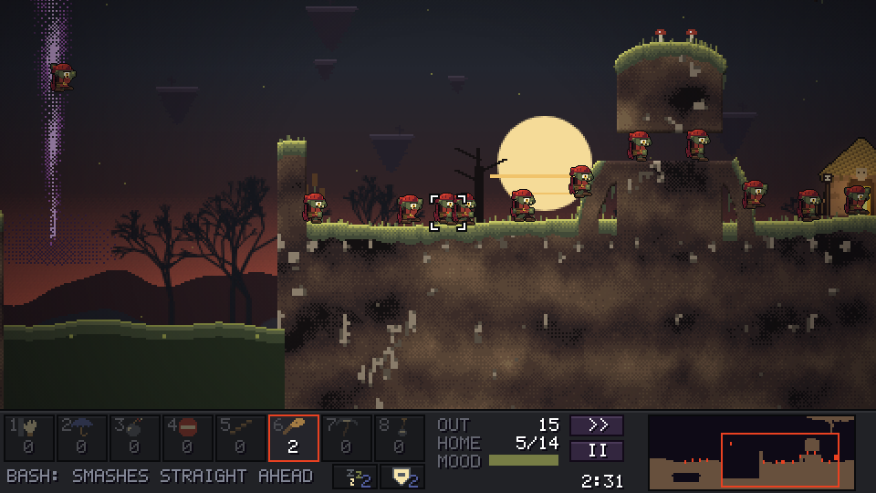
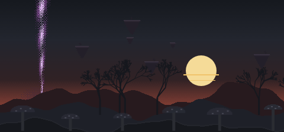

From the journals of the wandering scholar
Of the Goblins
Home: Bog and minesLed by: The WarlordSubstance: GrogClans: Mudfoot and Ashgut
A Goblin retreat is either a retreat or an invitation. The Goblins are rarely sure which themselves.
I was told the village was undefended. The Goblin who told me was paid in salt and was, I learned later, the village lookout.
The stake wall had three gates, and two of them were pits with a gate painted on the sticks. Inside, nothing matched: a door from one house, a roof from another, a hinge from somewhere it was certainly missed. Their Warlord received me in a hall on a rock. He was neither the largest nor the strongest Goblin present, and three of his clan were plainly waiting for him to blunder.
He did not. He asked what I knew of the road, then told me something false about it, to see whether I would repeat it. I left by the gate that was a gate. I checked it first.
Goblins are numerous, cheap and individually weak. They rely on numbers and cunning.
A Warlord rules by cunning, manipulation and keeping control, because strength alone fails against a rival who can outwit them.
They value cleverness and survival over tradition, scavenge whatever they can find, and quarrel violently even inside a clan.
They prefer deception and ambushes, so a Goblin retreat may be real or a trap. Alliances with other races are short and based on immediate gain.
Not yet settled: where Goblins live on the globe, and what Grog looks like.
As observed in Marching Orders
| In short | Cheap, sneaky swarm |
|---|---|
| Good at | More troops, faster grog |
| Bad at | Weakest in a fight |
| Own skills | Classic skills only, with more troops |
| Clans | Mudfoot: +1 dig if map has it; Ashgut: start with +1 grog |


site/img/journal/race-goblin-study.webpCount the gates. Then count them again from outside.
Every hood the same dark red. Nobody would say who decided that.


site/img/journal/race-goblin-home.webp